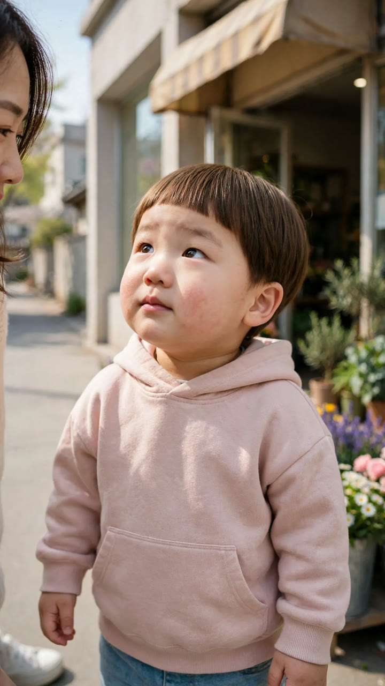
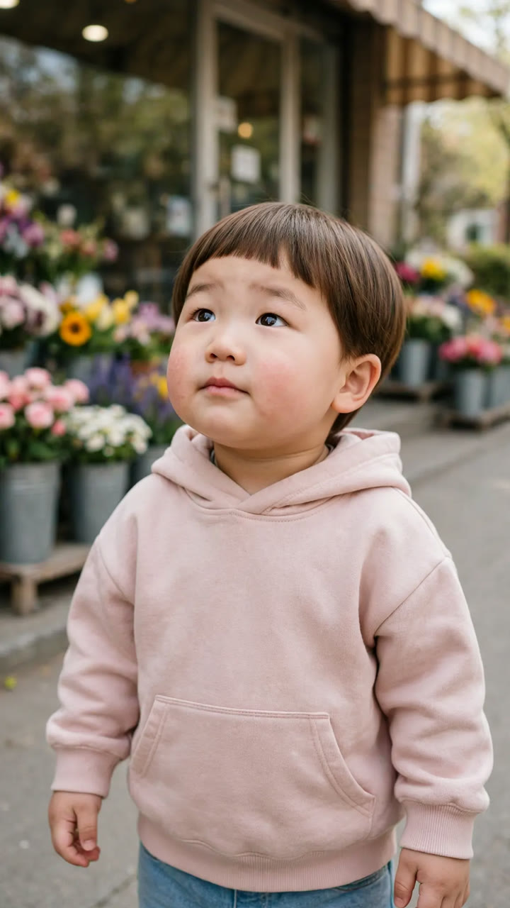

🎬 꽃집 편 H3 — 새 연출안
목소리는 Flow 그대로, 컷마다 새 키프레임으로 화면 구성을 바꿔 H3로 만듭니다. 지금 편은 9컷 전부 같은 미디엄 샷(카메라 고정)이라 밋밋했습니다. 컷은 이어 붙이지 않고 일반 편집처럼 «컷 전환»합니다 — 이음새 문제가 없습니다.
컷 구성
| # | 대사 | 새 화면 |
|---|---|---|
| 1 | 도윤 «이모~ 여기 꽃 많아!» | 넓은 설정샷 — 가게 앞 세 사람 (기존 그림 유지) |
| 2 | 이모 «여기는 꽃집이야. 꽃을 팔아.» | 이모 미디엄 클로즈업 · 도윤이 뒤통수가 앞에 |
| 3 | 도윤 «도윤이 꽃 볼래.» | 도윤이 클로즈업 (아래 시험 그림) |
| 4 | 사장님 «귀여운 애기가 왔네~ 뭐 줄까?» | 사장님 미디엄 · 도윤이 뒷모습이 앞에 |
| 5 | 도윤 «이거 예뻐요. 이거 주세요.» | 도윤이 미디엄 · 분홍 장미가 크게 앞에 |
| 6 | 이모 «도윤이 꽃 살 돈 있어요?» | 이모 미디엄 클로즈업 · 놀리는 표정 |
| 7 | 도윤 «돈은 엄마한테 있는데… 이모 주고 싶은데.» | 도윤이 클로즈업 · 두 손 모으고 수줍게 |
| 8 | 이모 «이모만 줄 거야? 엄마는?» | 옆에서 본 투샷 · 이모 쪼그려 앉아 감동 |
| 9 | 도윤 «엄마한테는 비밀이야~» | 도윤이 클로즈업 · 손 뒤로, 씩 웃음 (펀치라인) |
시험 1장 — 3번 컷 도윤이 클로즈업 (규칙: 1컷 시험 → 판정 → 나머지)
A

B

A는 이모가 왼쪽 끝에 살짝 걸려 «같이 있는» 느낌, B는 꽃이 뒤로 가득합니다. 입은 다문 채(립싱크 규칙).
참고: 1번 설정샷(유지)